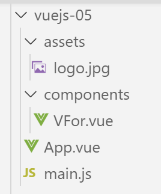
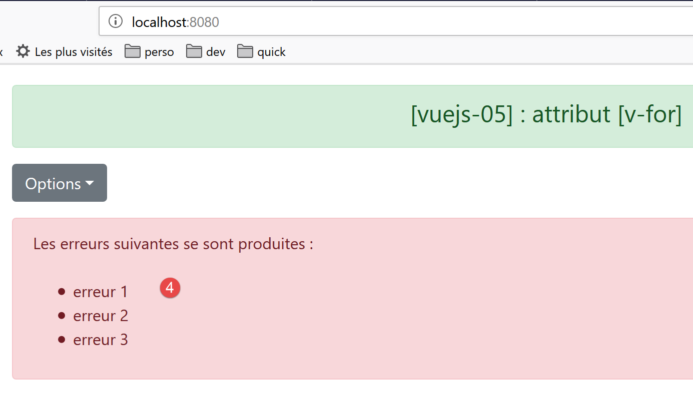

7. [vuejs-05] project: [v-for] directive
The [vuejs-05] project introduces the [v-for] directive:

7.1. The main script [main.js]
The code for the main script [main.js] is identical to that of the [main.js] script in the previous projects.
7.2. The main component [App]
The code for the [App] component is as follows:
<template>
<b-container>
<b-card>
<b-alert show variant="success" align="center">
<h4>[vuejs-05]: [v-for] attribute</h4>
</b-alert>
<VFor />
</b-card>
</b-container>
</template>
<script>
import VFor from "./components/VFor.vue";
export default {
name: "app",
components: {
VFor
}
};
</script>
- lines 7, 14, 19: the [App] component uses the [VFor] component;
7.3. The [VFor] component
The visual output will be as follows:


The code for the [VFor] component is as follows:
<template>
<div>
<!-- a dropdown list -->
<b-dropdown id="dropdown" text="Options">
<b-dropdown-item v-for="(option,index) in options"
:key="option.id"
@click="select(index)">{{option.text}}</b-dropdown-item>
</b-dropdown>
<!-- button -->
<b-button class="ml-3"
variant="primary"
@click="generateErrors"
v-if="!error">Generate a list of errors</b-button>
<!-- alert -->
<b-alert show variant="danger" v-if="error" class="mt-3">
The following errors occurred:
<br />
<ul>
<li v-for="(error, index) in errors" :key="index">{{error}}</li>
</ul>
</b-alert>
</div>
</template>
<!-- script -->
<script>
export default {
name: "VFor",
// static properties of the component
data() {
return {
// list of errors
errors: [],
// error or not
error: false,
// list of menu options
options: [
{ text: "option 1", id: 1 },
{ text: "option 2", id: 2 },
{ text: "option 3", id: 3 }
]
};
},
// methods
methods: {
// generate a list of errors
generateErrors() {
this.errors = ["error 1", "error 2", "error 3"];
this.error = true;
},
// the user has selected an option
select(index) {
alert("You have chosen: " + this.options[index].text);
}
}
};
</script>
Comments
- line 4: the <b-dropdown> tag is used to define a dropdown list [1] in the form of a button that you click to see the list options [2]. [text='Options'] defines the text displayed on the button [1];
- lines 5–7: the <dropdown-item> tag defines an item in the dropdown list;
- line 5: the [v-for] attribute indicates that the <dropdown-item> tag must be repeated for each element [option] of the [options] attribute, lines 37–41, of the component. [index] represents the element’s number in the list [0, 1, ..., n]. The name of the [option] element and the index are arbitrary. We could have written [<b-dropdown-item v-for="(o,i) in options" :key="o.id" @click="select(i)">{{o.text}}</b-dropdown-item>];
- line 6: if the [key] attribute is omitted, ESLint issues a warning. The value of the [key] attribute must remain consistent over time. Therefore, the [index] value of the element is not suitable. Because if this element is removed, the [index] values of those following it in the list will be decremented by 1. So here, we use the value [option.id] as the key value, lines 38–40, which will not change if an element is removed. The [key] attribute is used by [Vue.js] to optimize DOM (Document Object Model) re-rendering when the list needs to be re-rendered. Note the [:key] notation, since [key] has a dynamic value;
- line 7: the [select(index)] method, lines 49–51, will be called when the user clicks on an item in the list;
- line 7: the option text will be the value [option.text] defined on lines 37–41;
- line 10: the [3] button. [class=’ml-3] means margin (m) left (l) of three spacers. [@click="generateErrors"] indicates that the [generateErrors] method, lines 45–48, will be executed upon a [click] on the button. [v-if="!error"] indicates that the button’s display is conditional on the value of the static [error] attribute on line 35;
- lines 15–21: a [danger] [4] alert, also controlled by the static [error] attribute on line 35. The [class=’mt-3’] attribute (margin top 3 spacers) sets the space between this alert and the element above it;
- line 27: the HTML tag <br /> creates a line break;
- line 18: start of an unordered list [ul=unordered list];
- line 19: the <li> tag defines a list item <ul>. Here again, we use a [v-for] directive to generate the tag multiple times—as many times as there are elements in the [errors] array on line 33. We use the [:key=index] attribute here. We mentioned earlier that the index of list items is not a good way to distinguish between list items because if an item is removed, the indexes of all subsequent items change. Here, this doesn’t matter because the items in the error list are not likely to be removed;
- line 19: this line is used to display the [error] element from the [errors] list;
- lines 30–43: All dynamic elements in the [template] are attributes of the component. There are no [props] properties here whose values are set by the parent component;
- lines 48–55: The [generateErrors] method generates the list of errors to be displayed by the <ul> tag in lines 16–18. Additionally, it modifies the static [error] attribute, both to display this list of errors (line 15) and to hide the generation button (line 13);
7.4. Running the project